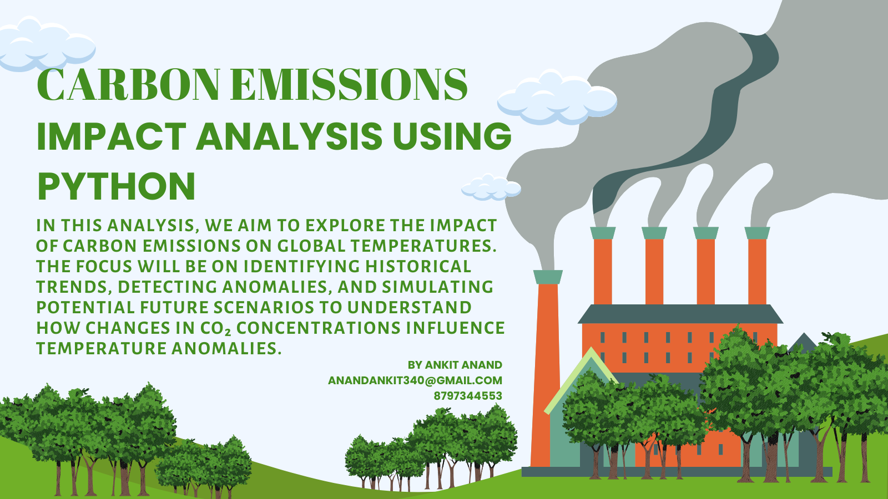
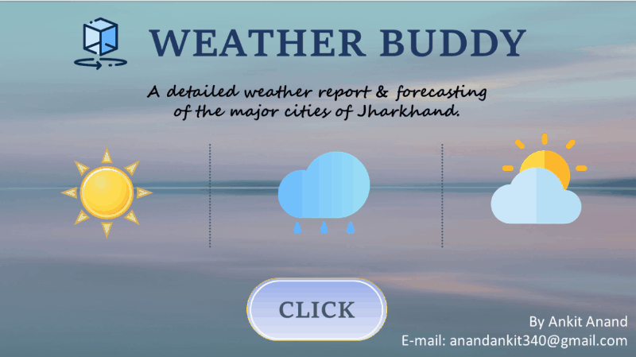

Remote HR Pulse: A comprehensive analysis on the impact of remote work on the mental health of 500 employees based on the claude LLM generated data and transformed in power query editor, the dashboard build in Power BI provides an evidence-based overview of the relationship between work arrangements and employee mental health.

Data Visualizsation in POWER BI - Revenue Growth Analysis for a Hotel Chain by Identifying peak seasons, optimized pricing strategies & enhancing guest satisfaction.

EDA in PYTHON - Carbon emissions impact analysis across the globe.
Data Cleaning in Excel & Data Visulaization with Tableau: Statistical analysis of weather data for determing the rate of average global temperature rise.

Predictive Data Analysis with Power BI: Implemented forecasting strategies for predicting load demand for a thermal power plant along with DSM tracking.

Weather Buddy: Weather Forecasting & Air Quality Dashboard Integrated weather API's of major cities of Jharkhand viz. Ranchi, Jamshedpur, Bokaro & Dhanbad to fetch and analyze real-time weather data, visualize forecasts, and monitor air quality through an interactive dashboard, enabling data-driven environmental insights.
Data Exploration in SQL - Data exploration of electricity consumption by various industries located in several indian metro cities for past year

Descriptive Analysis with POWER BI - Analyzed the performance & efficiency of a pizza chain stores located in different cities under distictive managers.
Certifications
This section showcases industry-recognized certifications that validate expertise in data analytics, business consulting, and strategic decision-making. These credentials demonstrate a commitment to continuous learning, mastery of cutting-edge tools, and a data-driven approach to solving complex business challenges. By earning certifications from globally recognized institutions, I ensure the highest standards of proficiency, enabling me to deliver impactful insights and drive business growth..

Google Data Analyst Professional Certificate

Microsoft certified Data Analysis and Visualization with Power BI

Data Visualization in Microsoft PowerPoint certification

Six Sigma Foundations certification

LinkedIn Learning certified "SAP S/4HANA" certification

Generative AI certification from the University of Colorado
About Me

A Mechanical Engineering from BIT Sindri, followed by nearly four years at Tata Power, where I gained hands-on experience in operations, analytics, stakeholder management, and leading diverse shop-floor teams. While solving business challenges through data and process optimization, I realized that the true driver of organizational success is its people. Working closely with employees across all levels helped me discover my passion for people management, employee relations, and data-driven decision-making, inspiring my transition into Human Resources. Now, as a MBA HRM student at IIT Kharagpur, I aspire to combine my industrial experience with HR Analytics, People Strategy, Talent Management, and Industrial Relations to build high-performing, people-centric organizations where data and empathy drive meaningful business impact. This portfolio showcases my work across HR, People Analytics, and Business Analytics, reflecting my commitment to using data and strategic thinking to build high-performing, people-centric organizations.
Contact
I am always eager to collaborate on projects that combine **people, strategy, and analytics** to solve real-world organizational challenges. Whether it's leveraging **HR Analytics**, enhancing employee experience, optimizing workforce decisions, or uncovering business insights through data, I am passionate about creating solutions that drive meaningful impact. Let's connect and explore how data-driven HR can build stronger organizations and empower people to thrive.